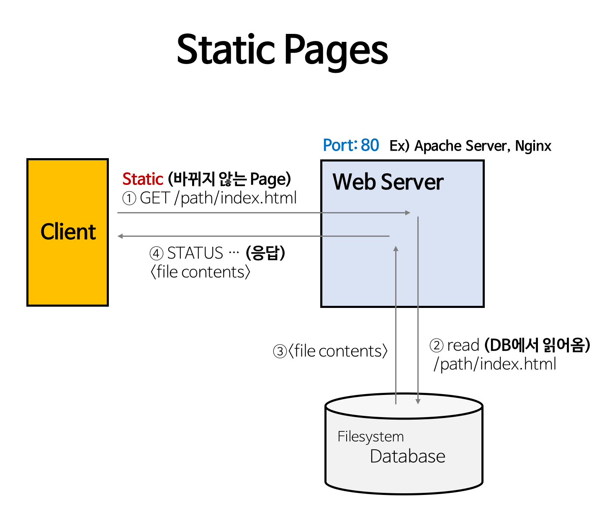
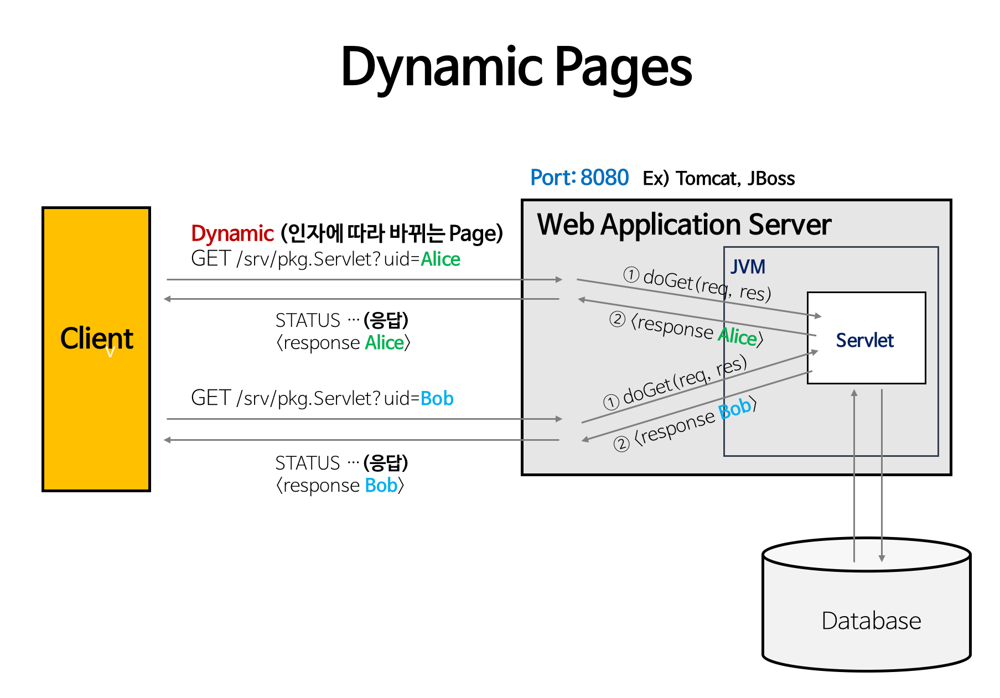

클라이언트가 필요한 리소스(HTML, CSS와 같은 컴포넌트 및 동적 리소스 포함)를 가지고 있으며 클라이언트의 요청에 따라 리소스를 제공하는 역할을 한다.
서버는 크게 두 가지 의미로 정의할 수 있다.
역할적 의미의 서버는 클라이언트에게 요청을 받아 수행 후 그에 따른 응답을 해주는 컴퓨터 시스템이며,
물리적 의미의 서버는 클라이언트가 필요한 리소스를 저장하는 컴퓨터이다.
웹 서버는 기본적으로 클라이언트에게
웹 서비스를 제공한다.
웹 동작 원리
1. 클라이언트가 특정 웹사이트에 접속하기 위해 주소창에 도메인네임(ex. www.naver.com)을 입력한다.
2. 클라이언트는 DNS 서버에서 해당 도메인 네임을 통해 웹 서버의 주소값을 얻는다.
3. 얻어진 주소값을 통해 클라이언트는 서버에 웹 페이지를 요청한다.
4. 웹 서버는 클라이언트의 요청을 받아 웹 컴포넌트를 클라이언트에 전송한다.
5. 클라이언트 브라우저는
해당 컴포넌트를 이용하여 사용자에게 웹페이지를 보여준다.
웹 서버 기능
웹 페이지를 클라이언트에게 전달 하는 것으로 HTTP를 사용하여 클라이언트와 통신을 한다.
웹 페이지는 HTML, CSS, JS와 같은 컴포넌트 들과 이미지, 동영상과 같은 정적 파일들이 포함되어 있다.
HTTP 통신은 요청과 응답이 끝나면 연결상태를 유지하지 않는다. 이러한 특성 때문에 웹페이지는 정적인 모델로 분류된다.
웹 서버와 WAS
웹 서버는 기본적으로 정적 웹페이지를 제공한다. 하지만, 웹 서비스가 발전함에 따라서 클라이언트와 서버간의 상호작용이 많아지고 범위가 확대됨에 따라
동적 웹페이지의 수요가 늘어났다. 이러한 동적 웹페이지를 가능하게 해주는 WAS(WEB Application SERVER)가 등장하였다.
WAS 는 DB(DataBase) 조회나 다양한 로직의 수행을 가능하게 한다.
|  |  |
|---|